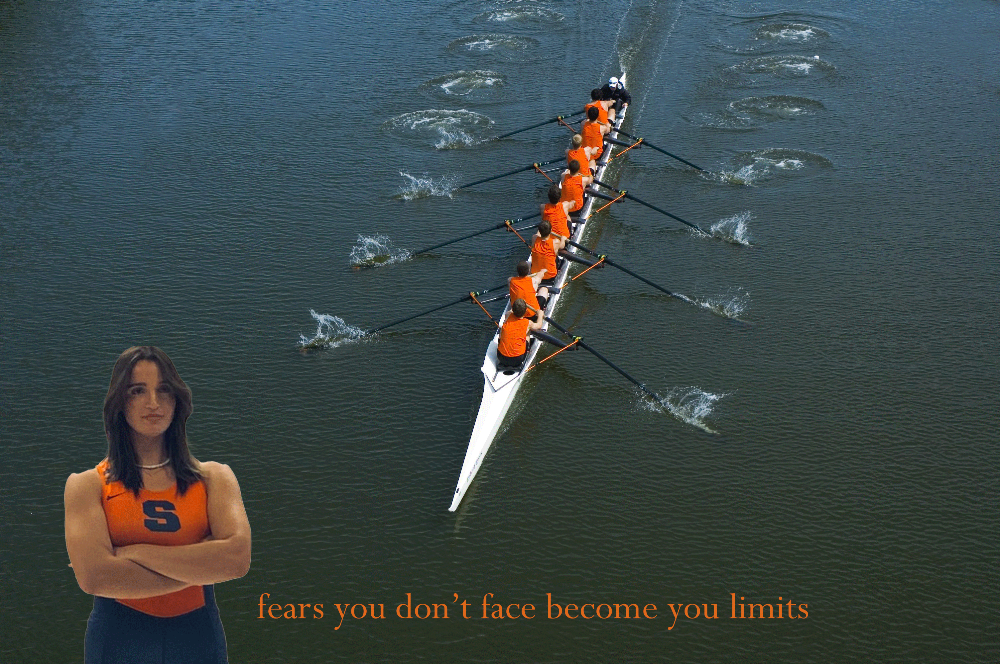

Aicha abdelaziz's biography

An internaional student athlete from tunisia, a rower with syracuse women's team.
I'am majoring in information studies.
I'm interested in network and cloud computing.i have a decent experience with coding and i so passionate with this major.
personal information
favorite animals
- dogs
- cats
- horses
Outside the college, i am tottaly an athletic person, i love being active or relaxing in the nature. activities such as swimming hiking, skiing is my favorite thing to do in my free time.
i grew up in small city on the coastal of tunisia, and that's where i came across with rowing and i started exploring it till being a professional athlete in it. i played with natioanl team for 6years, i participate in national and international competions and it was all of them a great experience in my life and i gained from it alot.
© 2020